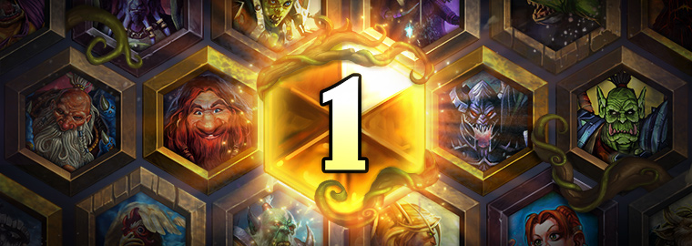
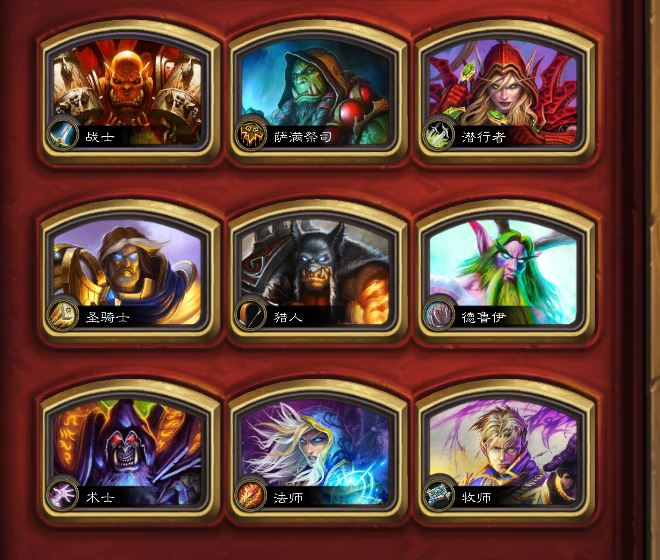
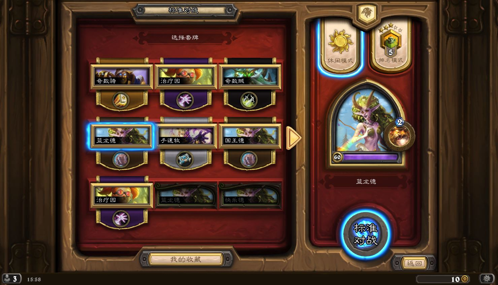
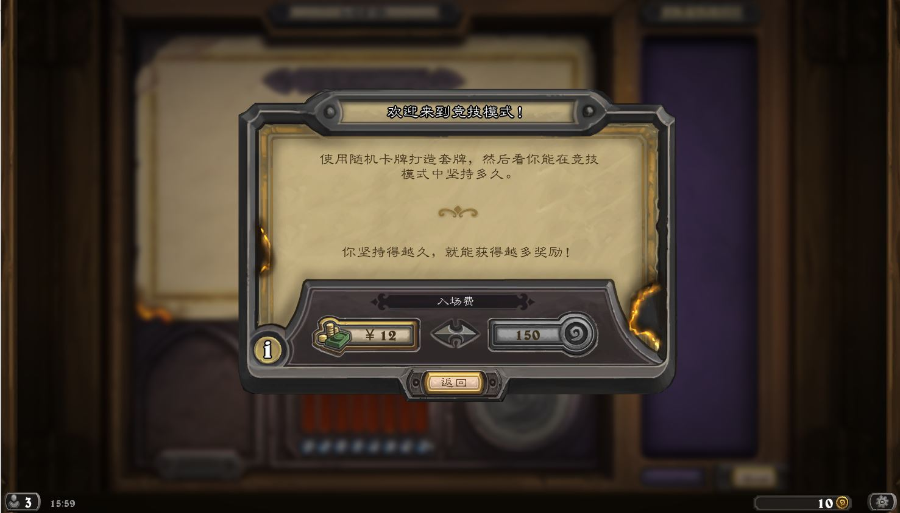
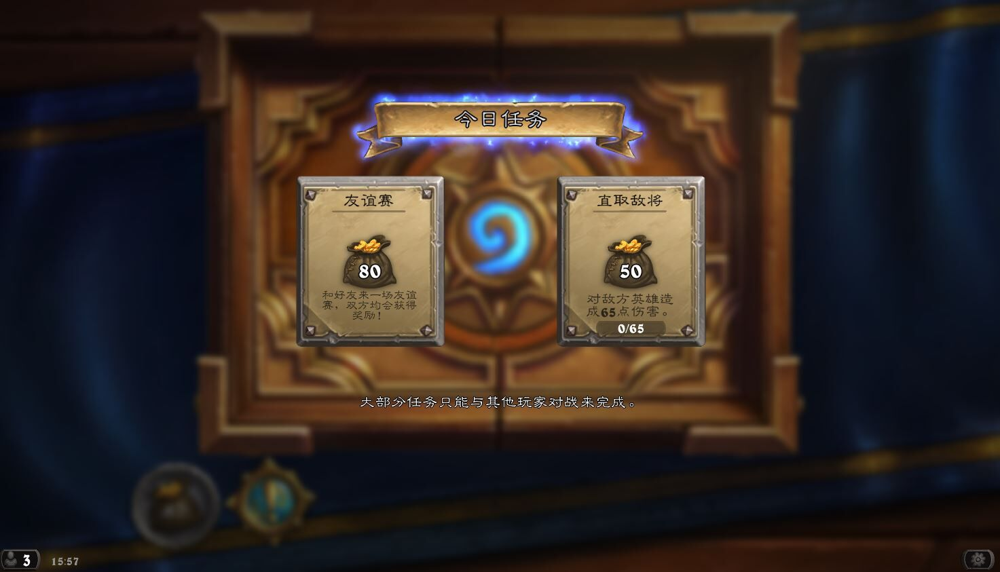

《炉石传说》这款游戏和其他网络游戏是有区别的，首先它不用花费一天中太多的时间去操作，只要在你闲暇的的时候花费十分钟左右的时间就可以享受这款游戏的魅力。不用玩家自己蹲坐在电脑旁，整天整夜的消耗。与其说他是竞技类游戏，更不如说，它是一款卡牌休闲类游戏。在你工作中，学习后，玩耍中都可以进行，只要打开炉石就可以去畅游。
那么《炉石传说》这款游戏的规则是什么呢？
游戏规则
1、首先需要玩家在进行对战的开始选择已有的一套套牌进行对战，这套卡必须为30张，并且相同的卡牌只能带两张，传说级卡牌只有一张。游戏开始后系统随机分配前后手，先手3张卡牌、后手4张卡牌，并且随机分配玩家套牌中的卡牌，然后我们可以选择开局卡牌的去留问题。由先手触发。在游戏过程中，每一个回合机器人随机发放一张你套牌库中的一张。在一局对战中，牌库上限为60张，回合为50回合上限，如果在50回合中没有一方血量为0.那么判定为平局，但同理在回合数中，由一方血量为0，则判定为输。
2、在游戏开始时，双方都不会有法力水晶，想要获得法力水晶就需要进行多次回合，而每一回合系统法力水晶只会增加1点。达到10点时为最大。再也不会增长。每一回合的法力水晶消耗在于你实用卡牌英雄技能的法力值的多少，并且实用当前回合法力值以下的卡牌为准。当你的法力水晶法力值为0时则不可再使用卡牌，除到下一回合法力水晶充满为止。每一回合开始时都会自动充满。法力水晶在界面右下方。蓝色宝石就是它
3、游戏过程里，随从卡牌和武器卡牌理论上可以永久保存，但实际上每一次使用都会消耗它的属性，当属性为0时，卡牌则消失 。而法术牌只能实用一次，使用后不可拿回（除去最新版本的回响效果）法术效果生效后消失；英雄牌在替换英雄后消失。
这就是《炉石传说》一场游戏的规则，和它游戏中的设定。
模式系统
《炉石传说》有九个职业，玩家一般一开始都会选择一个职业进入游戏
《炉石传说》游戏的模式系统分为4种：对战模式，冒险模式，竞技场和乱斗模式。每一种模式有每一种模式的乐趣。
1、对战模式
对战模式分为标准模式和狂野模式，并且两种模式都会有休闲对战和排名对战。首先标准模式的卡牌选择范畴在两年中游戏官方推出的最新卡牌包和基础牌。它的套牌必须为最新的卡牌，如果选择其他卡牌，则卡组不能再标准模式下进行。其次狂野模式，顾名思义它的卡牌范畴必须必标准模式下的卡牌范畴广。它的套牌卡牌可以使用《炉石传说》游戏中的任何一个卡牌。因此它的卡牌库量是十分庞大的。对于新手来说不是一个很好的选择。最后两种模式下的休闲对战和排名对战，一。休闲对战，他则是玩家与玩家的游戏对战，不进行排名。二、排名模式。则是与玩家进行排名对战。而排名对战有25个等级，从最低25级到1级，在一级之上还有更加激烈的传说等级，每一级胜利5颗星晋级。
2、冒险模式
冒险模式为炉石官方根据每一次扩展包推行所设计的玩家与电脑闯关模式，每一次通关可以得到卡牌、卡背或者卡牌扩展包。截止到最新版本的女巫森林，冒险模式总共度过了7个扩展模式。他们分别是：
纳克萨玛斯蜘蛛区、瘟疫区、军事区、构造区、冰龙巢穴所属冒险卡、冒险卡背黑石山黑石深渊、熔火之心、黑石塔、黑翼之巢、秘密实验室所属冒险卡、冒险卡背
探险者协会探险者大厅、废墟之城、奥达曼、奥西斯神庙、源生法杖所属冒险卡、冒险卡背
卡拉赞宴会厅、歌剧院、展览馆、上层塔所属冒险卡、冒险卡背
冰封王座序章、堡垒下层、上层区域、冰封王座所属扩展包卡、圣骑士英雄“阿尔萨斯”皮肤
狗头人8区（随机冒险）所属扩展包卡、冒险卡背
女巫森林4区（随机冒险）所属扩展包卡、冒险卡背
3、竞技场
竞技场模式。就是让玩家在电脑的分配下进行即时构造套牌进行与玩家的对战。首先在选择职业时有三个职业挑选，都为随机。选定职业后，选取卡牌，每3张为一次，选择其中一个为准总共30次选择机会。套牌选定后不可更改。然后游戏开始后，每一场竞技场的对局总共有三次机会，输掉三次则判定游戏结束，或者盈满12场比赛，游戏结束，当游戏结束后你可以根据你钥匙的等级进行游戏后的奖励，奖励包括金币，奥术之尘，卡牌包奖励。等级越高，奖励越高。
4、乱斗模式
它是每周四暴雪固定启动开始的游戏方式，每周一停止。它的游戏模式每一周都不会相同，可以说它是暴雪推出的娱乐模式吧。玩家可以在乱斗模式中赢取一包卡牌包或者赢取金币。
任务系统
任务系统分为三种：1、新手任务。2、日常任务。3、隐藏任务。这三个任务第一个为为新手指引的任务，引领新手熟悉游戏的方式设定。第二个任务为日常任务，为每一个玩家游戏过程中的奖励。第三个为隐藏任务，需要玩家完成特定的收集才会获得。总的来说，所有的任务都是以获得金币或卡牌包为目的所得。不同的任务不同的奖励，大家有空可以去网上搜索下，在这里就不细细讲解了，最新版本已经改变了原有的日常任务要求。
这就是《炉石传说》游戏规则，模式系统和它的任务系统。游戏规则是限定了这款游戏的框架，模式系统是这款游戏的扩充，而任务系统则是这款游戏的点缀。它们贯穿着我们游戏乐趣的同时，并且给与玩家的动力。就像航船，拥有自己的骨架，动力，点缀，扩充。这样才可以航行。而《炉石传说》就向一艘船，我们就是它的动力扩充地，而暴雪娱乐是他的原动力。只有我们了解了炉石，了解暴雪，我们才可以行走在浩瀚的世界里去。